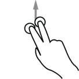
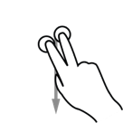
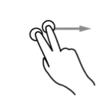
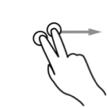

Guide d’utilisation de TalkBack
TalkBack est un lecteur d’écran intégré à Android qui décrit à haute voix les éléments qui apparaissent sur l’écran du téléphone. Il est gratuit et permet à un utilisateur non- ou malvoyant, dyslexique ou illettré de pouvoir vocaliser tous les éléments visibles contenus dans la page. Un outil comme TalkBack est appelé indifféremment lecteur d’écran ou synthèse vocale, même si un lecteur d’écran est en fait un logiciel associé à une synthèse vocale.
Lorsque TalkBack est activé, les gestes standards effectués sur l’écran tactile donnent des résultats différents. En outre, des gestes supplémentaires permettent de déplacer le focus à l’écran et de contrôler les éléments sélectionnés. TalkBack comprend des gestes de toucher et de balayage à un, deux et trois doigts. Nous décrivons ici les gestes de base pour une utilisation courante de TalkBack. À noter : TalkBack n’est considéré comme accessible qu’à partir de la version JellyBean (4.1) car on peut naviguer séquentiellement.
Avant toute chose, commencez par mettre à jour TalkBack : page de l’application sur le PlayStore
Gestes de bases #
- Se déplacer avec un doigt sur l’écran
-
 Explorer l’écran et entendre la vocalisation de l’élément qui est touché.
Explorer l’écran et entendre la vocalisation de l’élément qui est touché.
- Double-cliquer n’importe où sur l’écran
-
 Ouvrir ou activer l’élément qui a été touché (vocalisé) en dernier.
Ouvrir ou activer l’élément qui a été touché (vocalisé) en dernier.
- Slide vers le haut ou le bas en utilisant deux doigts
- Se déplacer verticalement sur une liste ou sur une page à condition qu’elle soit sélectionnée. Correspond à un slide vertical.
- Slide vers la gauche ou la droite en utilisant deux doigts
-
 
Changer de page ou d’écran quand c’est possible. Correspond à un slide horizontal.

Changer de page ou d’écran quand c’est possible. Correspond à un slide horizontal.
- Slide vers la droite en utilisant un doigt
-
 Déplacer le focus TalkBack sur l’élément suivant.
Déplacer le focus TalkBack sur l’élément suivant.
- Slide vers la gauche en utilisant un doigt
-
 Déplacer le focus TalkBack sur l’élément précédent.
Déplacer le focus TalkBack sur l’élément précédent.
- Slide vers le haut en utilisant un doigt
-
 Changer de mode de lecture : « par défaut (éléments) », « caractères », « mots », « lignes », « paragraphes », « en-têtes », « liens » et « commandes ».
Changer de mode de lecture : « par défaut (éléments) », « caractères », « mots », « lignes », « paragraphes », « en-têtes », « liens » et « commandes ».
- Slide vers le bas en utilisant un doigt
-
 Changer de mode de lecture comme le geste précédent mais dans le sens inverse : « par défaut (éléments) », « commandes », « liens », « en-têtes », « paragraphes », « lignes », « mots » et « caractères ».
Changer de mode de lecture comme le geste précédent mais dans le sens inverse : « par défaut (éléments) », « commandes », « liens », « en-têtes », « paragraphes », « lignes », « mots » et « caractères ».
These images are licensed under a Creative Commons Share Alike 2.0 license. Photo credit: openexhibits
Pour plus d’information sur TalkBack et une description détaillée de ses fonctionnalités, nous vous invitons à lire la documentation officielle de Google sur TalkBack.